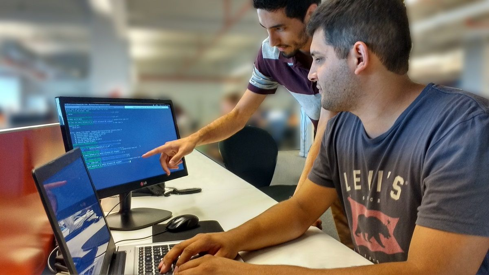

HISTORIA
Codo a Codo 4.0 es un Programa de enseñanza en Programación, destinado a personas jóvenes y adultas, que cuenten con título secundario. Tiene como objetivo brindar herramientas que faciliten la inserción laboral en el sector IT, necesarias para mejorar la empleabilidad de las personas. En la actualidad el curso de Codo a Codo supera los 60.000 por cuatrimestre.
TESTIMONIOS
Nuestros egresados cuantan con la posibilidad de acceder a entrevistas en las empresas más importantes del rubro, cumpliendo con el objetivo planteado, una mayor inserción de personal en el sector IT.
INSCRIPCIONES
ESTÁ ABIERTA LA INSCRIPCIÓN PARA EL CURSO GRATUITO “CODO A CODO 4.0 FEDERAL” QUE CAPACITA EN HERRAMIENTAS PARA LA PROGRAMACIÓN.